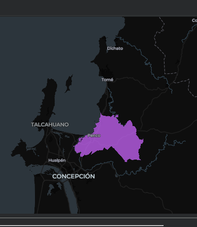

FieldMaps | Límites administrativos reutilizables
Repositorio en GitHub Abrir en Colab
Resumen
Notebook reutilizable que consulta el Parquet público de FieldMaps (adm4_polygons) y permite elegir, de forma interactiva, un país, una región y opcionalmente una unidad ADM3. El resultado es un GeoJSON y un mapa interactivo, sin descargar el archivo completo ni editar las consultas SQL. Funciona en Google Colab y en Jupyter local.
| Aspecto | Detalle |
|---|---|
| Fuente | FieldMaps, adm4_polygons.parquet (179 893 registros, 318 valores de adm0_src) |
| Acceso | DuckDB con extensión spatial, leyendo el Parquet por HTTP |
| Selección | input() en cascada: adm0_src, adm1_name y, opcional, adm2_name + adm3_name |
| Salida | GeoJSON en EPSG:4326 y mapa interactivo con Lonboard |
| Herramientas | Python con DuckDB, Pandas, GeoPandas y Lonboard |
Hallazgo principal
Un mismo flujo recorre cualquier territorio sin tocar el SQL: de CHL a la Región del Biobío y a la comuna de Penco, con 1 registro y 0 geometrías nulas o inválidas.

Objetivos
- Construir un procedimiento reutilizable, sin ningún país fijado en el código.
- Listar los valores administrativos realmente disponibles antes de filtrar.
- Permitir elegir por número o por texto, evitando errores de tildes y codificación.
- Mantener consultas seguras con parámetros SQL (
?) en vez de concatenar texto. - Entregar un subconjunto validado, un resumen por ADM2, un GeoJSON y una visualización.
Flujo de trabajo
- Entorno. Detecta Colab o local e instala solo las dependencias faltantes.
- Conexión. DuckDB lee el Parquet remoto; la geometría sale como WKB con
ST_AsWKB. - Exploración. Conteo de registros y esquema de columnas.
- Selección en cascada.
adm0_src(318 valores),adm1_name(16 regiones en Chile) y ADM3 opcional (33 unidades en Biobío); Enter conserva todo el ADM1. - Extracción. Consulta parametrizada con solo los campos necesarios.
- Control de calidad. GeoDataFrame en EPSG:4326, con conteo de geometrías nulas e inválidas.
- Exportación. GeoJSON a carpeta local o Google Drive, con nombre de archivo generado.
- Visualización. Mapa interactivo con Lonboard.
Decisiones técnicas
- Consultas parametrizadas, para admitir apóstrofes y caracteres especiales sin errores.
- Elección por índice, que evita copiar nombres largos o con codificación alterada.
- ADM2 + ADM3 como par, porque un mismo nombre ADM3 puede repetirse en distintos ADM2.
- Geometría en WKB desde SQL, para pasar a GeoPandas sin archivos intermedios.
Limitaciones
- La fuente trae algunos nombres con la codificación alterada (por ejemplo
Región del BÃo-BÃo); elegir por índice lo sortea, pero no corrige el dato de origen. - El recurso contiene polígonos ADM4, así que filtrar por ADM3 puede devolver varias filas. Para un único límite hay que hacer un
dissolve. - El CRS EPSG:4326 se asume, no se verifica. Antes de medir áreas o distancias hay que confirmarlo y reproyectar.
- Los nombres y polígonos dependen de la versión de FieldMaps consultada; conviene revisar licencia y fecha antes de usarlos.